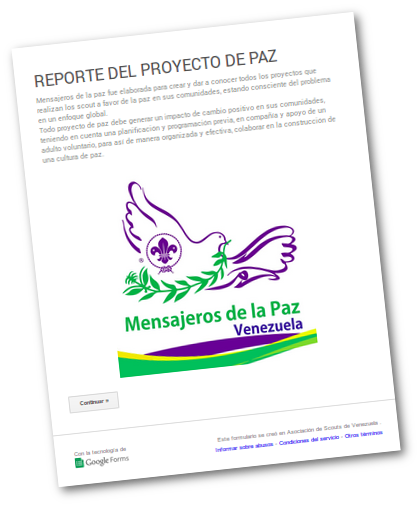

Recuerda que Primero que nada deberás compartir el proyecto en www.scout.org tal como lo indicamos en informe para la Oficina Mundial.
Si ya hiciste esa parte finaliza tus reportes, con el formulario dirigido a la Coordinación Nacional de Mensajeros, el cual podrás acceder pulsando el siguiente botón.
- Todas las casillas señaladas con * son obligatorias, sino la llenas no puedes proseguir.
- En este caso el Embajador de Paz, eres tu mismo (el joven que aplicó el proyecto en su lugar de estudios).
- Debes tener un adulto Asesor, quien es aquel dirigente scout que colabora en cada una de las fases del proyecto, apoyando así la efectividad de las acciones.
- El ENLACE WEB del proyecto, es el de tu publicación en www.scout.org. Simplemente copia y pega lo que aparece en la barra de navegación de tu explorador web.
- En donde dice RESUMEN DEL PROYECTO DE ACCIÓN DE PAZ coloca lo mismo que escribiste en Descripción cuando cargaste tu proyecto en www.scout.org.
- Las horas de servicio no incluyen únicamente el tiempo que te tomó la charla, que es de 1 hora aprox., sino también el tiempo de preparación previa para todo el proyecto.